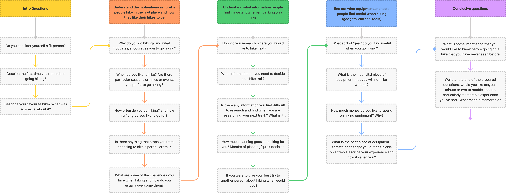

Initially the problem was raised.
“People who enjoy getting out in nature need a better way to understand and plan nature walks and hikes nearby to their location”
To understand this problem users were asked questions with these 3 objectives in mind.
Understand the motivations as to why people hike in the first place and how they like their hikes to be
Find out what information people find important when embarking on a hike
Discover what equipment and tools people find useful when hiking (gadgets, clothes, tools)
The results from 6 user interviews were recorded and reduced down to a few key points and a User persona was created.

Click to enlarge
